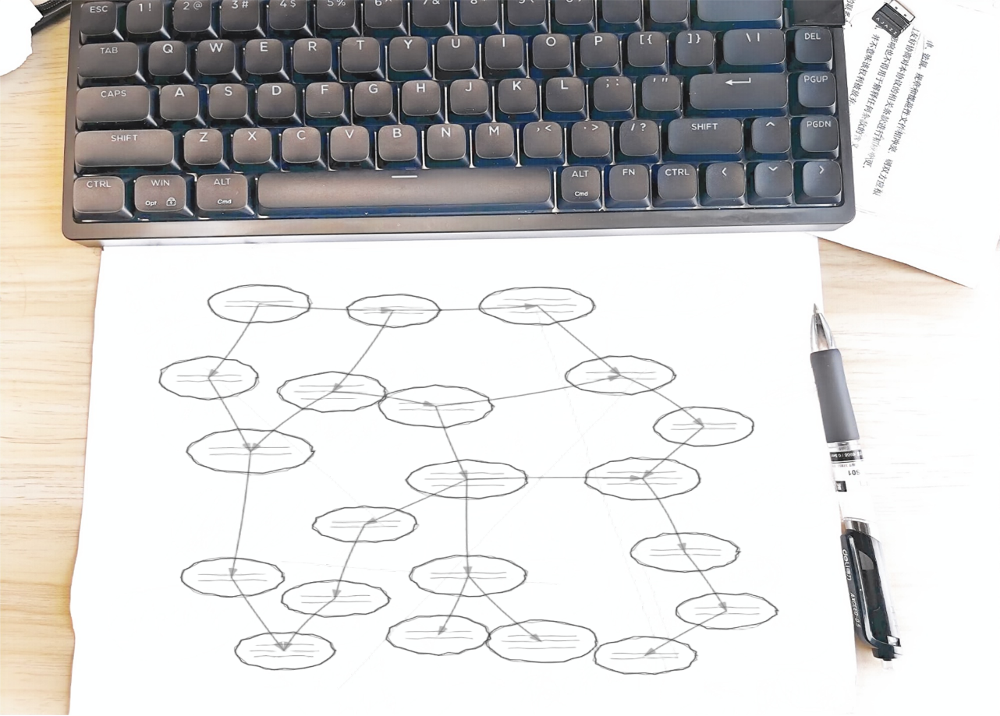
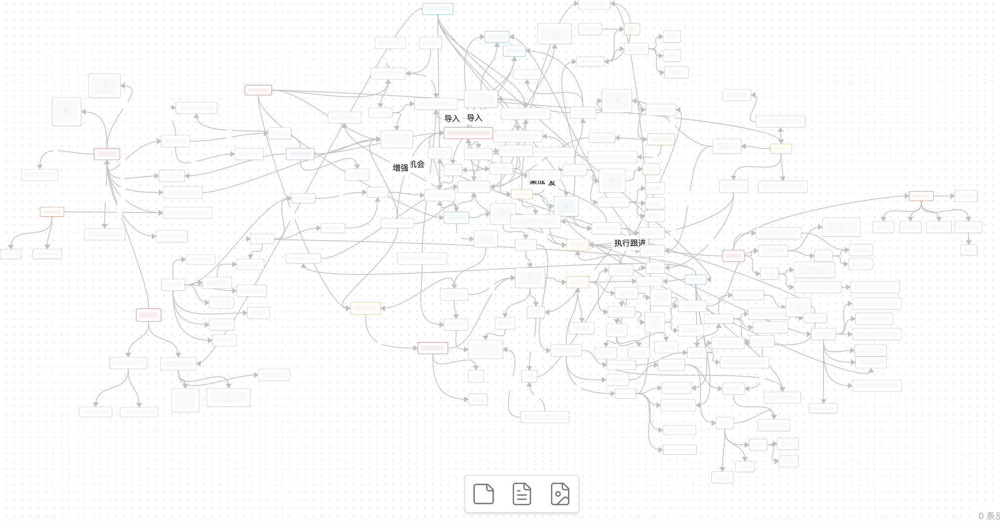
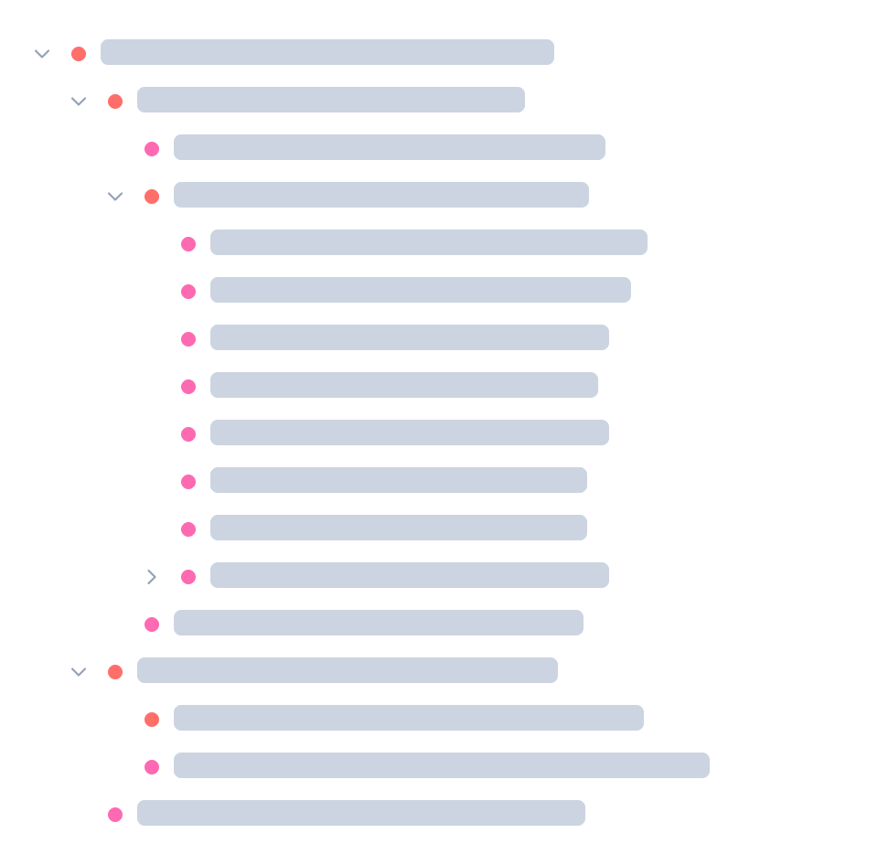
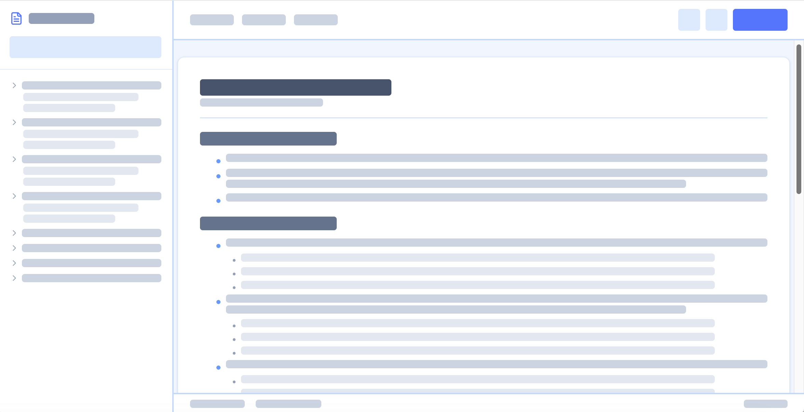
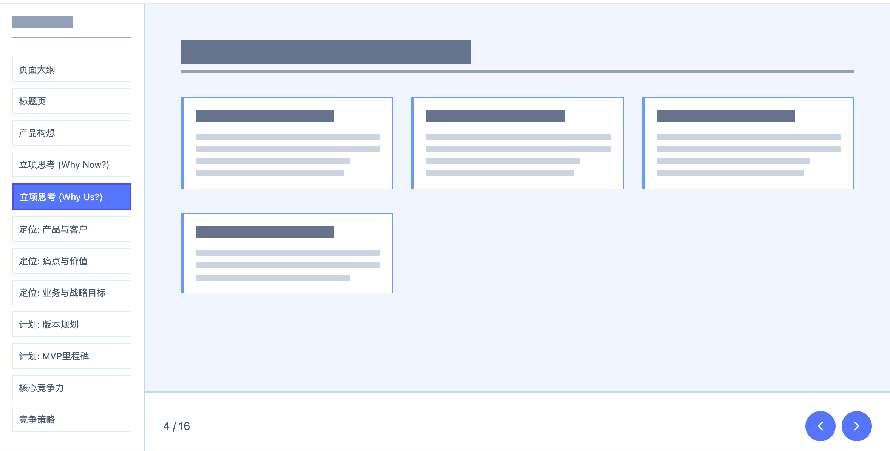
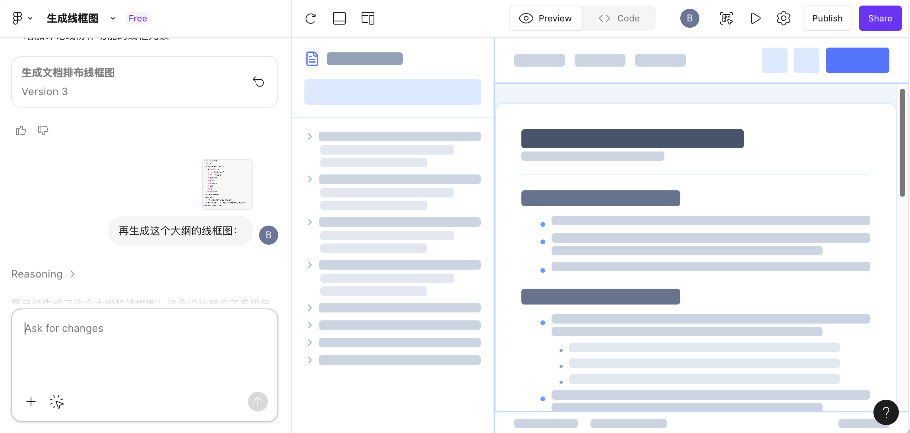

最近有机会再次做一个长期项目的规划。在多轮沟通完后，有了清晰的结论。但很明显脑子不够用，明明都是确定性的讨论结果，但如何把他们系统化表达出来，然后跟大家对齐。
要是换到以前，一定是抓耳挠腮封闭好几天，才能画完图。这一次，我把整个流程记录下来，分享一下如何用概念图 + AI 把想法变成可协作的文档。
我一直强调好的工具发明后，只有长期和磨合，才能达到好的效果。
与有经验的人、团队相关人大量的沟通。沟通信息都是一手素材。
这一块跟长期工作和观察、阅读、思考有关。是必须的，一定为了工作长期深入研究和解决问题才行。光东看西看不会深入。
这主要是一个启动仪式，让思想收敛。
把脑子里所有概念和相互关系表达为 Graph。因为使用频率低，没有找专门的工具。Obsidian 中的画布就可以用，但是还有很多可改进。例如格式就不透明。
这个图已经代表我的思想了。
使用最强大模型，将完全看不懂的文件源码转换为标准的 .mmd 图表达格式。
这个可以直接被 AI 计算和解读，也方便协作。实际上别人也看不懂，只能说适合做演示和 git 做版本控制。这些代码已经代表我的思想可计算了。
使用这个图，和之前零零散散的文档、会议摘要一起。给他需要输出的协作文档清单式大纲模板。即可生成大纲。我在上面检查，逐个确认。
已经可以做到 95% 的一次性正确了，有的问题也是之前思考不够严谨带来的。
为了给人协作，生成 wiki 友好的 HTML，粘贴到公司 wiki。
为了开会呈现友好，生成 HTML5 的 PPT，开会时直接使用。
会议过程中，在大纲上做反馈记录。回头再补充概念图。再生成最终的文档。
整个过程，AI 表现出来惊人的遵从性。原因是我给了他足够的上下文，尤其是概念图图谱的方式，表达了确定性的关系。恰恰 LLM 也是以这种概念层层细化的方式训练和工作的。
我都找想国内概念图第一人 @吴金山教授搞一个这样的产品，叫做让思维可计算。
AI 的能力极大的增强了人脑。以前要折磨好几个通宵的任务，一上午几个小时搞定了。谁能不 AI？ 谁能不爱创作？
另外写这篇博客配图时，Figma Make 画线框图已经非常擅长了。
AI 这个世界。